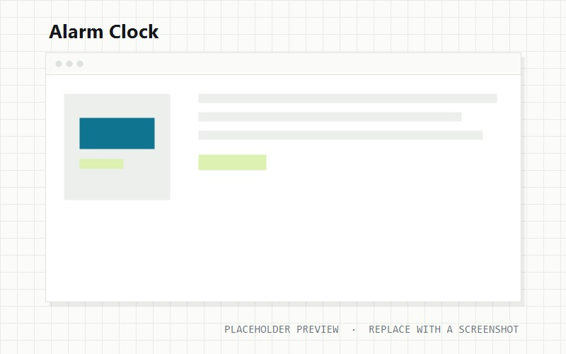

An ESP-32 alarm clock — simulated first, then soldered.

I wanted an alarm clock that wasn't my phone. This one runs on an ESP-32: firmware in C++, prototyped in Wokwi so the logic was right before anything got soldered.
The interesting constraint was the snooze button. On a screen a button is a rectangle; in hardware it has travel, a sound, and a feel, and getting that right took longer than the firmware.